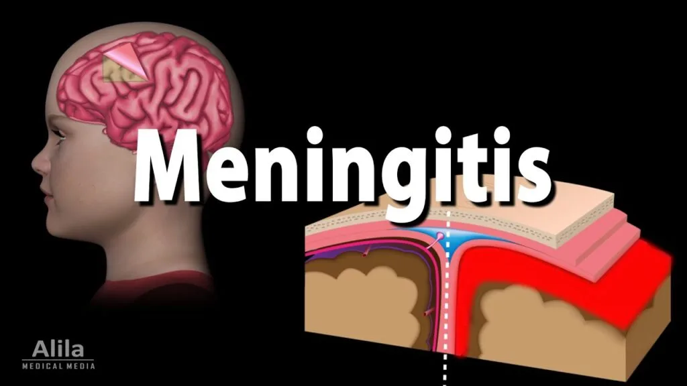
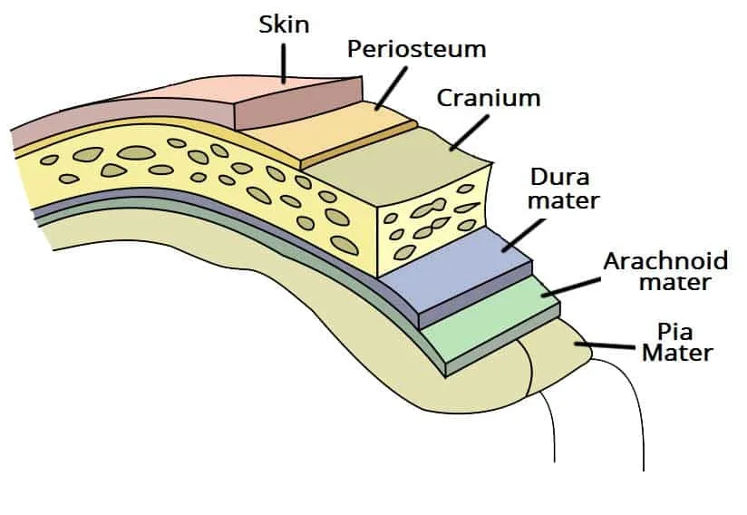
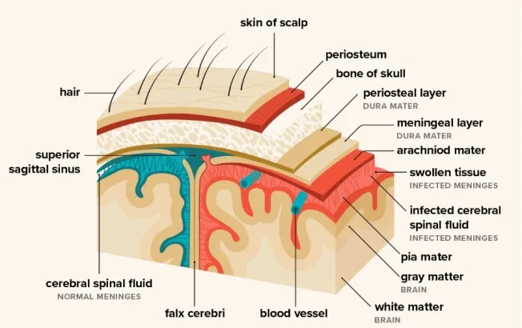
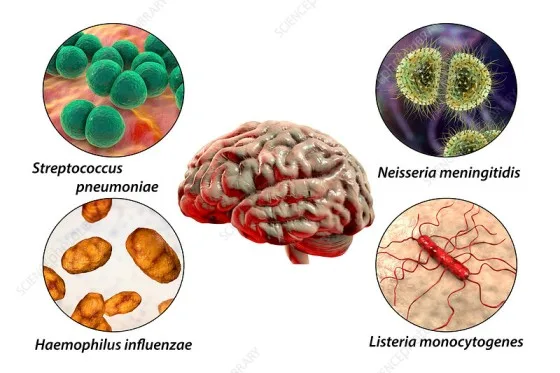
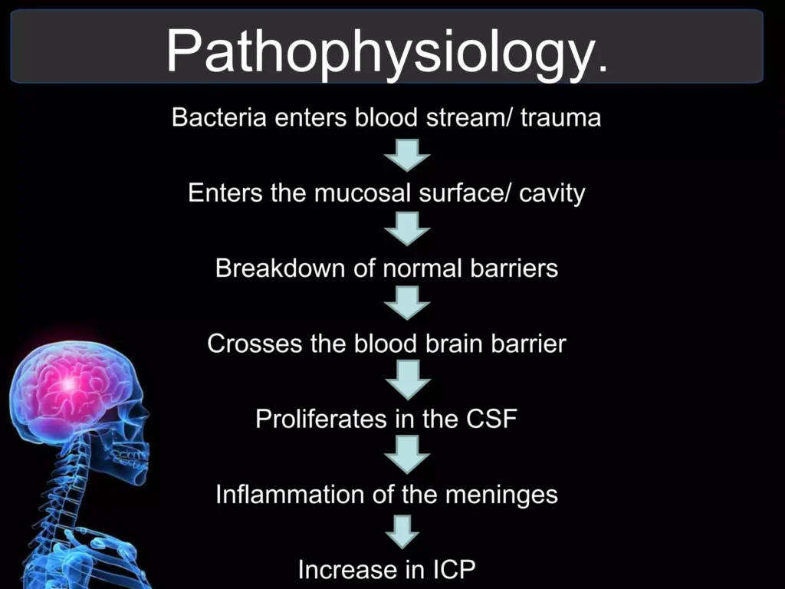
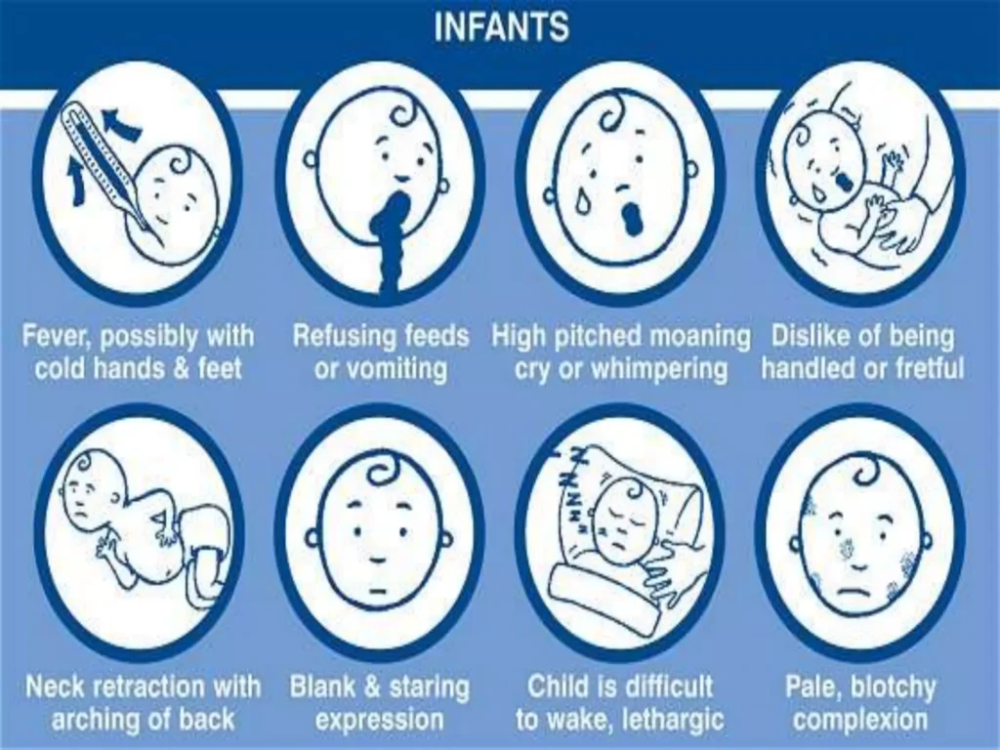
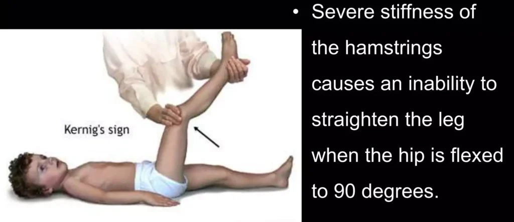
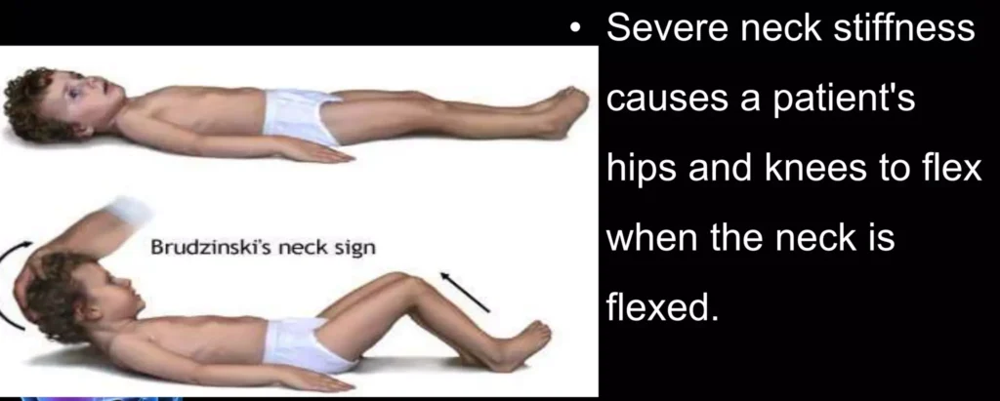

Expanded Nursing Uganda Explanation
Meningitis should be understood beyond a short definition. Link the concept to patient history, focused assessment, common risks, nursing priorities, documentation and evaluation of outcomes.
Contents, 15 sections (tap to expand)
01 MENINGITIS
The word meningitis is from Greek μῆνιγξ meninx , “membrane” and the medical suffix – itis , “ inflammation “.
Meningitis is an acute inflammation of the protective membranes covering the brain and spinal cord, known collectively as the meninges .
Meningitis can be life-threatening because of the inflammation’s proximity to the brain and spinal cord; therefore, the condition is classified as a medical emergency .
WHAT ARE MENINGES?
The meninges comprise three membranes that, together with the cerebrospinal fluid, enclose and protect the brain and spinal cord (the central nervous system). There are 3 meninges, namely; the pia mater , the arachnoid mater and the dura mater – this naming is from inwards outwards.
- The pia mater is a very delicate impermeable membrane that firmly adheres to the surface of the brain, following all the minor contours.
- The arachnoid mater (so named because of its spider-web-like appearance) is a loosely fitting sac on top of the pia mater. The subarachnoid space separates the arachnoid and pia mater membranes and is filled with cerebrospinal fluid.
- The outermost membrane, the dura mater , is a thick durable membrane, which is attached to both the arachnoid membrane and the skull.
The meninges provide a blood brain barrier which prevents infections from blood to spread to the brain, however, some organisms cross this and cause some diseases. They also prevent direct injury to the brain.
02 Causes of Meningitis and their Mode of transmission.
1. Bacterial Causes:
- Streptococcus pneumoniae : Common bacterial cause, transmission through respiratory droplets.
- Group B Streptococci (subtypes III) : Inhabit the vagina, main cause in the first week of life for newborns.
- Escherichia coli (carrying K1 antigen) : Normally found in the digestive tract, affecting newborns during birth.
- Listeria monocytogenes (serotype IVb) : Transmitted by the mother before birth, impacting newborns.
- Neisseria meningitidis (meningococcus) : More common in children around 6 years, transmission through respiratory droplets.
- Haemophilus influenzae type B : Common in those under 5 years in countries without vaccination, transmission through respiratory droplets.
- Mycobacterium tuberculosis: More common in people from tuberculosis-endemic countries, transmission through respiratory droplets.
- Treponema pallidum (syphilis) and Borrelia burgdorferi (Lyme disease): Transmitted through sexual contact (syphilis) and tick bites (Lyme disease).
Note: Aseptic meningitis, where no bacterial infection is demonstrated, is usually caused by viruses.
2. Viral Causes:
- Enteroviruses : Spread through fecal-oral route.
- Herpes simplex virus (generally type 2) : Transmitted through direct contact with infected lesions (genital sores).
- Varicella-zoster virus : Causes chickenpox and shingles, transmitted through respiratory droplets.
- Mumps virus : Spread through respiratory droplets and saliva.
- HIV : Transmitted through blood, sexual contact, or from mother to child during childbirth or breastfeeding.
- LCMV (Lymphocytic choriomeningitis virus) : Spread through the urine, droppings, saliva, or nesting materials of infected rodents.
3. Fungal Causes :
- Cryptococcus neoformans: Inhalation of fungal spores from the environment.
- Coccidioides immitis, Histoplasma capsulatum, Blastomyces spp .: Inhalation of fungal spores from the environment.
4. Parasitic Causes :
- Eosinophil -predominant CSF indicates parasitic causes.
- Cerebral malaria : Transmitted through infected mosquitoes.
- Amoebic meningitis (e.g., Naegleria fowleri): Contracted from freshwater sources.
- Angiostrongylus cantonensis, Gnathostoma spinigerum, Schistosoma : Various modes of transmission (e.g., contaminated food, water, or snail intermediate hosts).
- Cysticercosis, Toxocariasis, Baylisascariasis, Paragonimiasis : Different modes of transmission (e.g., ingestion of contaminated food or water).
5. Non infectious Conditions:
- Neoplastic : Meningitis may result from cancer metastasis to the meninges.
- Sarcoidosis : An inflammatory condition with an unknown cause.
- Systemic lupus erythematosus : An autoimmune disorder.
- Granulomatosis with polyangiitis (Wegener’s): An autoimmune condition affecting blood vessels.
- Behçet’s disease: An autoimmune condition causing inflammation of blood vessels.
- Certain drugs may cause meningeal irritation and resemble as meningitis including: Nonsteroidal antiinflammatory drugs (NSAIDs), Intravenous immunoglobulin, Intrathecal agents, Certain antibiotics (eg, trimethoprim-sulfamethoxazole).
03 Risk Factors for Meningitis:
- Immunosuppression : Weakens the immune system. Use of immunosuppressants (post-organ transplantation), HIV/AIDS, age-related loss of immunity. Associated Pathogens: Staphylococci, Pseudomonas, and other Gram-negative bacteria.
- Recent Skull Trauma : Provides an entry point for nasal cavity bacteria into the meningeal space.
- Brain and Meninges Devices : Presence of devices like cerebral shunts, extraventricular drains, or Ommaya reservoirs.
- Head and Neck Infections : Infections in the head and neck area, such as otitis media or mastoiditis.
- Cochlear Implants: Devices for hearing loss.
- Persisting Anatomical Defects : Congenital or acquired defects allowing continuity between the external environment and the nervous system.
- Extremes of Age : Children, especially below 5 years, and individuals over 50 years old.
- Infections (e.g., Endocarditis, Pneumonia) : Spread of bacteria clusters through the bloodstream.
- Asplenia (Absence of the Spleen) : Lack of a spleen.
04 Pathophysiology of Meningitis:
1. Entry of Organisms:
(a) Routes :
- Direct Entry : Through open fractures.
- Blood-Borne : Via the bloodstream.
- Adjacent Part : From neighboring areas.
2. Bloodstream Invasion : Organisms enter the bloodstream and reach the meninges. Upon reaching the meninges, organisms are identified as foreign.
3. Immune Response Initiation : Recognition triggers a battle between the body’s defense cells and the invading organisms.
Cytokine Release : Astrocytes and microglia release cytokines, recruiting immune cells and stimulating tissues for the immune response.
4. Blood-Brain Barrier Permeability :
- Vasogenic Edema : Increased permeability leads to cerebral edema, swelling the brain due to fluid leakage from blood vessels.
- White Blood Cell Influx : Large numbers of white blood cells enter the cerebrospinal fluid (CSF), causing meningeal inflammation and interstitial edema.
5. Cerebral Vasculitis :
- Inflammation of Blood Vessels : Walls of blood vessels become inflamed, resulting in decreased blood flow.
- Cytotoxic Edema: Further edema, affecting cells directly.
6. Increased Intracranial Pressure (ICP) :
- Combined Edema Effects : Vasogenic, interstitial, and cytotoxic edema collectively elevate ICP.
- Impaired Blood Flow: Decreased blood flow makes it challenging for blood to enter the brain.
- Oxygen Deprivation: Brain cells undergo apoptosis (programmed cell death) due to reduced oxygen supply.
7 .Brain Swelling and Symptoms :
- CSF Flow Blockade : Brain swelling obstructs cerebrospinal fluid (CSF) flow.
- Clinical Signs: Severe headache, seizures, and other symptoms manifest.
8. Untreated Progression:
- Spread to the Brain : Unchecked inflammation extends to various parts of the brain.
- Complications : Encephalitis, increased ICP, brainstem dysfunction, multi-organ dysfunction.
- Outcome : Without treatment, progression can lead to death.
05 CLINICAL FEATURES
- Fever : Elevated body temperature. Common and indicative of systemic infection, including meningitis.
- Headache : Severe head pain. Present in nearly 90% of bacterial meningitis cases.
- Neck Stiffness ( Nuchal Rigidity ): Increased neck muscle tone and stiffness. Classic symptom, suggests irritation of the meninges. Common in both adults and children with meningitis.
- Photophobia : Intolerance to bright light. Reflects heightened sensitivity of the eyes due to meningeal inflammation.
- Phonophobia : Intolerance to loud noises. Similar to photophobia, indicative of sensory hypersensitivity.
- Irritability ( in Small Children ): Behavioral changes, increased fussiness.
- Unwell Appearance ( in Small Children ): General discomfort, outward signs of illness. Nonspecific but compliments other symptoms.
- Fontanelle Bulging ( in Infants ): Bulging of the soft spot on a baby’s head. Specific to infants; indicates increased intracranial pressure. Visually noticeable in infants aged up to 6 months.
- Leg Pain: Discomfort in the legs. May result from systemic effects of inflammation.
- Cold Extremities : Cool hands and feet. Peripheral effects of systemic inflammation. Physical examination reveals cooler-than-normal extremities.
- Abnormal Skin Color : Changes in skin tone. Peripheral circulation disturbances due to inflammation. Altered skin color noted during examination.
- Positive Kernig’s Sign : Pain limits passive extension of the knee. Specific for meningitis; indicates meningeal irritation. Tested with the person lying supine; pain restricts knee movement.
- Positive Brudzinski’s Sign: Neck flexion causes involuntary knee and hip flexion. Specific for meningitis; reflects meningeal irritation. Neck flexion triggers involuntary leg movements.
- Jolt Accentuation Maneuver : Determines likelihood of meningitis in those with fever and headache. A procedure is done where Rapid horizontal head rotation; worsening headache indicates possible meningitis. Simple bedside test aiding diagnostic decision-making.
- Rapidly Spreading Petechial Rash ( Meningococcal Meningitis ): Small, reddish-purple spots on the skin. Specific to meningococcal meningitis; requires urgent medical attention. May precede other symptoms, aiding early identification.
- Confusion or Altered Consciousness : Mental state changes, disorientation. Indicates severe cases with potential neurological involvement. Altered mental status evident during examination.
- Vomiting : Forceful expulsion of stomach contents.
- Nonspecific Symptoms in Young Children: Irritability, Drowsiness, Poor Feeding :
- Irritability : Behavioral changes.
- Drowsiness : Increased sleepiness.
- Poor Feeding : Reduced appetite or feeding reluctance.
06 Diagnosis and Investigations
- History Taking and Physical Examination:
- Classic Triad of Diagnostic Signs :
- Nuchal Rigidity : Increased neck muscle tone and stiffness.
- Sudden High Fever: Elevated body temperature.
- Altered Mental Status : Changes in cognitive function.
- Diagnostic Accuracy: The classic triad is present in only 44–46% of bacterial meningitis cases.
- Additional Signs : Positive Kernig’s sign or Brudziński sign may be present.
CSF Findings in Different Forms of Meningitis:
- Parameters Assessed: Glucose levels, Protein levels, White Blood Cell count (predominantly Polymorphonuclear Cells).
- Diagnostic Differentiation: Discrepancies in CSF composition aid in identifying the type of meningitis.
Blood Tests and Imaging:
- Inflammatory Markers: C-reactive protein, Complete Blood Count.
- Blood Cultures : Performed to identify pathogens.
- Electrolyte Monitoring: Essential for managing complications (e.g., hyponatremia).
- Imaging (CT or MRI) : Recommended before lumbar puncture in 45% of adult cases.
- Indications : Identify brain masses (tumors or abscesses) or elevated intracranial pressure (ICP).
Lumbar Puncture (Spinal Tap):
- Procedure : Needle inserted into the dural sac to collect cerebrospinal fluid (CSF).
- Contraindications : Mass in the brain or elevated ICP.
- Opening Pressure Measurement: Typically elevated in bacterial meningitis.
- Appearance of Fluid : Cloudiness may indicate higher levels of protein, white and red blood cells, and/or bacteria.
Specialized Tests for Differentiating Meningitis Types:
-Latex Agglutination Test :
- Positive Results : Streptococcus pneumoniae, Neisseria meningitidis, Haemophilus influenzae, Escherichia coli, and group B streptococci.
- Routine Use : Not encouraged unless other tests are inconclusive.
-Limulus Lysate Test :
- Positive Results : Gram-negative bacteria.
-Polymerase Chain Reaction (PCR):
- Purpose : Amplify bacterial or viral DNA in CSF.
- Sensitivity and Specificity: Highly sensitive and specific; detects trace amounts of infecting agent’s DNA.
-Tuberculous Meningitis :
- Diagnostic Techniques : Ziehl-Neelsen stain (low sensitivity), Tuberculosis culture (time-consuming), increasing use of PCR.
07 MANAGEMENT OF MENINGITIS.
Meningitis is a potentially life-threatening condition with a high mortality rate if left untreated. Prompt treatment is crucial, and a delay has been linked to a poorer outcome. The initial treatment involves promptly administering antibiotics and sometimes antiviral drugs. Corticosteroids may also be used to prevent complications from excessive inflammation.
Treatment with broad-spectrum antibiotics should not be delayed while confirmatory tests are being conducted. In cases where meningococcal disease is suspected, benzylpenicillin is recommended before transfer to a hospital. Intravenous fluids are administered if there is hypotension or shock, and admission to an intensive care unit may be necessary.
Aims of Management
- To minimize further complication.
- To relieve pain.
- To preserve life.
- To promote comfort
Immediate Intervention:
- The patient and relatives are received and admitted to the male medical ward in an isolation room with dim light, on a comfortable bed, and positioned for comfort.
- Quick assessment of the patient’s condition, including level of consciousness (using the Glasgow Coma Scale), and baseline observations (TPR/BP) are recorded.
- Relatives and the patient are reassured to alleviate anxiety.
- The doctor is informed about the patient’s condition.
Meanwhile ;
In case of unconsciousness, oxygen administration is instituted.
An Intravenous (IV) line is established for fluid and drug administration, and a blood sample is taken for hematology.
The doctor may request for the following investigations;
- Cerebral Spinal Fluid analysis for quality, quantity, and nature.
- Chest x-ray and ultrasound to identify a possible primary site.
Continuous care
- Catheter insertion for monitoring urine output and fluid balance charting after 24 hours.
- Nasogastric tube insertion for nutritional support.
- Tepid sponging is performed to reduce fever and enhance patient comfort.
- Continuous monitoring of CSF for quality, quantity, and appearance.
- Collection, disinfection, and safe disposal of all patient discharges to prevent cross-infection.
Following Doctor’s Review and Prescription:
For Streptococcus pneumonia (10-14 day course; up to 21 days in severe cases):
- Benzyl penicillin 3-4 MU IV or IM every 4 hours
- Or Ceftriaxone 2 g IV or IM every 12 hours
For Haemophilus influenza (10-day course):
- Ceftriaxone 2 g IV or IM every 12 hours.
For Neisseria meningitides (up to 14-day course):
- Benzyl penicillin IV 5-6 MU every 6 hours
- Or Ceftriaxone 2 g IV or IM every 12 hours
- Or Chloramphenicol 1 g IV every 6 hours (IM if IV not possible)
For adults above 50 years :
- Cefotaxime 2g IV every 6 hours
- Or Ceftriaxone 2 g IV every 12 hours
- Or Co-trimoxazole 50mg/kg IV daily in 2 divided doses, plus Ampicillin 2g IV every 4 hours
- Or Co-trimoxazole 50mg/kg IV daily in 2 divided doses.
Meningitis is potentially life-threatening and has a high mortality rate if untreated; delay in treatment has been associated with a poorer outcome. The first treatment in acute meningitis consists of promptly giving antibiotics and sometimes antiviral drugs. Corticosteroids can also be used to prevent complications from excessive inflammation.
Thus, treatment with wide-spectrum antibiotics should not be delayed while confirmatory tests are being conducted. If meningococcal disease is suspected in primary care, guidelines recommend that benzylpenicillin be administered before transfer to hospital.
Continuous Nursing Care:
- Reassurance of the patient and relatives.
- Position change every 2 hours to prevent pressure sores and aspiration.
- Infusion site cleaning, bed baths, and regular oral care.
- Proper bed-making and changing of soiled linen.
- Ensuring a balanced diet.
- Encouraging patient exercises for healing.
- Providing a bedpan for bowel opening.
- Health education about meningitis, its causes, features, and prevention.
Specific Interventions:
Mechanical Ventilation : Required if the level of consciousness is very low or if respiratory failure is evident.
Raised Intracranial Pressure (ICP):
- Monitoring measures are taken to optimize cerebral perfusion pressure.
- Various treatments, including medication (e.g., mannitol), are used to decrease intracranial pressure.
Seizures : Treated with anticonvulsants.
- Hydrocephalus: May require the insertion of temporary or long-term drainage devices, such as a cerebral shunt.
Bacterial Meningitis:
- Antibiotics Used : Cefotaxime, vancomycin, chloramphenicol, and ampicillin can be used, sometimes in combination.
- Empirical Therapy: Based on age, history of head injury, recent neurosurgery, and the presence of a cerebral shunt. Ampicillin is recommended for young children, those over 50, and immunocompromised individuals to cover Listeria monocytogenes.
- Tuberculous Meningitis : Requires prolonged treatment with antibiotics (typically a year or longer).
Steroids:
- Additional treatment with corticosteroids (usually dexamethasone) shows benefits such as a reduction in hearing loss and better short-term neurological outcomes. Their role differs in children and adults.
Viral Meningitis:
- Usually requires supportive therapy.
- Antiviral drugs (e.g., aciclovir) may be used for herpes simplex virus and varicella-zoster virus.
- Mild cases can be treated at home with conservative measures.
Fungal Meningitis:
- Treated with long courses of high-dose antifungals (amphotericin B and flucytosine).
- Frequent lumbar punctures or lumbar drains may be needed to relieve raised intracranial pressure.
Note:
- Untreated bacterial meningitis is almost always fatal.
- Viral meningitis tends to resolve spontaneously and is rarely fatal.
- With treatment, mortality from bacterial meningitis depends on age and the underlying cause. Mortality rates are highest in newborns (20–30%) and adults (19–37%).
Note; in managing meningitis; (general)
- Isolation Precautions: Meningitis, especially of bacterial origin, can be highly contagious. Isolation precautions involve placing the patient in a dedicated room to prevent the spread of the infectious agent to others. Healthcare providers and visitors may need to wear protective gear to minimize exposure.
- Initiation of Antimicrobial Therapy : Swift initiation of antimicrobial therapy is paramount. Broad-spectrum antibiotics are administered promptly to target the causative microorganism. This immediate action helps control the infection and improve the chances of a positive outcome.
- Maintenance of Optimal Hydration: Dehydration is a common complication in meningitis due to fever, vomiting, and decreased oral intake. Maintaining optimal hydration involves administering intravenous fluids to prevent dehydration, support overall health, and assist in medication delivery.
- Maintenance of Ventilation : Ensuring adequate ventilation is crucial, especially if the patient exhibits signs of respiratory distress or altered consciousness. Mechanical ventilation may be employed if necessary to assist with breathing and maintain proper oxygen levels.
- Reduction of Increased Intracranial Pressure (ICP) : Increased intracranial pressure can lead to severe complications. Various measures, such as medications like mannitol, may be employed to reduce intracranial pressure. Monitoring and managing ICP are critical to prevent further damage to the brain.
- Management of Bacterial Shock : Bacterial meningitis can lead to septic shock, a life-threatening condition. Managing bacterial shock involves interventions to stabilize blood pressure, improve perfusion, and address systemic inflammatory responses to prevent multiple organ failure.
- Control of Seizures: Seizures can occur in meningitis, particularly in the acute phase. Anticonvulsant medications are administered to control and prevent seizures, helping to protect the brain from additional damage.
- Control of Temperature : Elevated body temperature is common in meningitis and can worsen outcomes. Temperature control involves antipyretic medications, cooling measures like tepid sponging, and maintaining a comfortable environment to prevent hyperthermia.
- Correction of Anemia : Anemia may develop due to various factors, including inflammation. Correction of anemia involves addressing underlying causes, providing iron supplementation if needed, and ensuring adequate oxygen-carrying capacity in the blood.
- Treatment of Complications : Meningitis can lead to various complications, such as neurological deficits, organ dysfunction, and long-term sequelae. Treatment of complications involves targeted interventions to address specific issues, enhance recovery, and improve overall patient outcomes.
- Intravenous fluids should be administered if hypotension (low blood pressure) or shock is present admit the person to an intensive care unit if deemed necessary.
- Mechanical ventilation may be needed if the level of consciousness is very low, or if there is evidence of respiratory failure.
- If there are signs of raised intracranial pressure, measures to monitor the pressure may be taken; this would allow the optimization of the cerebral perfusion pressure and various treatments to decrease the intracranial pressure with medication (e.g. mannitol).
- Seizures are treated with anticonvulsants .
- Hydrocephalus (obstructed flow of CSF) may require insertion of a temporary or long-term drainage device, such as a cerebral shunt.
08 Behavioral Measures:
- Personal Hygiene : Practicing good personal hygiene, such as regular handwashing, can reduce the risk of bacterial and viral meningitis transmission.
- Respiratory Etiquette : Since meningitis can spread through respiratory droplets, avoiding close contact during sneezing, coughing, or kissing helps minimize the risk of transmission.
- Fecal Contamination Awareness: Viral meningitis, often caused by enteroviruses, can be spread through fecal contamination. Being cautious about hygiene and avoiding behaviors that may lead to contamination helps reduce the risk.
09 Vaccination:
- Haemophilus influenzae Type B (Hib) Vaccine : Routine childhood vaccination against Hib has significantly reduced Hib-related meningitis in many countries since the 1980s.
- Pneumococcal Conjugate Vaccine (PCV) : Vaccination against Streptococcus pneumoniae with PCV reduces the incidence of pneumococcal meningitis, especially in young children.
- Bacillus Calmette-Guérin (BCG) Vaccine: Childhood vaccination with BCG has been linked to a reduction in the rate of tuberculous meningitis.
10 Antibiotics:
- Short-Term Prophylaxis: Administering antibiotics to individuals with significant exposure to specific meningitis-causing agents can serve as short-term prophylaxis. This approach is particularly relevant in risk groups, such as those with basilar skull fractures.
11 Complications of Meningitis:
- Sepsis : Meningitis may trigger sepsis, characterized by a systemic inflammatory response affecting blood pressure, heart rate, temperature, and breathing. It can lead to organ dysfunction due to insufficient blood supply.
- Disseminated Intravascular Coagulation (DIC): Excessive blood clotting in DIC may obstruct blood flow to organs, increasing the risk of bleeding. Gangrene of limbs is a severe complication in meningococcal disease.
- Increased Intracranial Pressure (ICP): Swelling of brain tissue may increase pressure inside the skull, leading to herniation. Symptoms include decreased consciousness, loss of pupillary light reflex, and abnormal posturing. Hydrocephalus may result from inflammation obstructing normal cerebrospinal fluid flow.
- Seizures : Seizures, common in the early stages, may persist and lead to epilepsy. They are observed in 30% of cases in children.
- Cranial Nerve Abnormalities : Meningitis-induced inflammation may affect cranial nerves, leading to issues with eye movement, facial muscles, and hearing. Visual symptoms and hearing loss may persist post-recovery.
- Brain Inflammation and Vascular Issues : Encephalitis and cerebral vasculitis may result in weakness, loss of sensation, or abnormal movement in body parts controlled by the affected brain areas.
- Long-Term Consequences : Meningitis can cause long-term complications such as deafness, epilepsy, hydrocephalus, and cognitive deficits, especially if not promptly treated.
12 Nursing Uganda Clinical Lens
Use Meningitis as a practical nursing topic, not only a memorized definition. Adapt assessment and care to age, weight, development, caregiver knowledge and family support.
- What to understand first: define meningitis, identify the normal or expected pattern, then explain what changes when the patient is unwell.
- Why it matters in care: the nurse must recognize risk early, explain findings clearly, document accurately and know when to escalate.
- How to revise it: connect each point to assessment, nursing diagnosis or care problem, intervention, rationale and evaluation.
13 Assessment Guide
- Airway, breathing, circulation, hydration, temperature, feeding, activity and danger signs.
- Weight-based medicines, immunization status, growth, development and caregiver concerns.
- Signs that may be subtle in children, including lethargy, poor feeding, fast breathing or convulsions.
14 Nursing Priorities, Rationales and Outcomes
- Use age-appropriate communication and involve the caregiver.
- Prevent dehydration, hypothermia, medication errors and delayed referral.
- Teach home care, danger signs and follow-up clearly.
The rationale for these priorities is patient safety: nursing actions should prevent deterioration, reduce discomfort, support recovery and create clear evidence for the next caregiver.
- Expected outcome: The child is clinically improving, caregiver instructions are understood and follow-up is arranged.
15 Patient Teaching and Revision Check
- Explain meningitis in simple language the patient or caregiver can repeat back.
- Teach warning signs, medicine or follow-up instructions, hygiene or lifestyle points where relevant.
- For exams, prepare a short answer using: definition, causes or risk factors, signs, assessment, management, complications and prevention.
- For ward practice, document baseline findings, actions taken, patient response and the plan for review.
Illustrations and Diagrams (21)








13 more diagrams available, open the lesson for full illustrations.
Related Video Lectures
Watch nursing lecture videos on YouTube for this topic. Opens in a new tab.
Watch on YouTubeExternal link: YouTube may use its own cookies and terms. Nursing Uganda is not affiliated with YouTube.